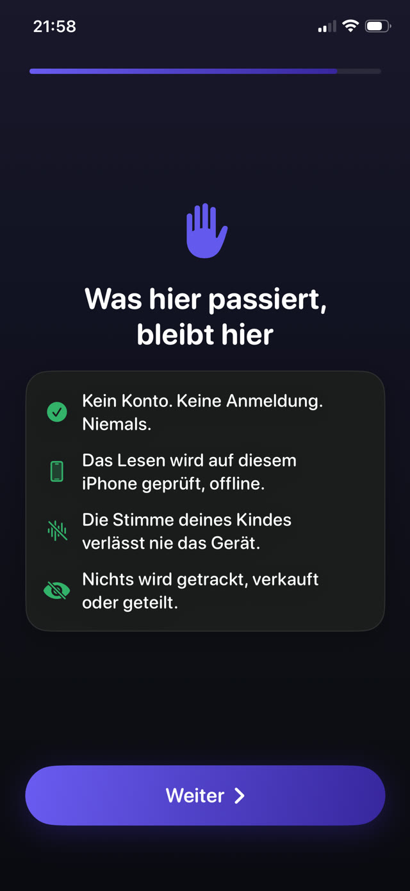

Die Art des Scheiterns zu verstehen ist nützlicher als eine weitere Liste empfohlener Stunden.


Warum Regeln zerfallen
- Sie brauchen einen Erwachsenen vor Ort. Jede Regel, die durch Zusehen durchgesetzt wird, stirbt am ersten Abend, an dem Sie kochen, arbeiten oder außer Haus sind.
- Sie sind verhandelbar. Ein erfolgreicher Einspruch lehrt Ihr Kind, dass die Regel ein Eröffnungsangebot ist, und jeder Abend wird zur neuen Verhandlung.
- Sie bestrafen, ohne eine Alternative zu bieten. Das Handy wegzunehmen erzeugt ein gelangweiltes Kind und keinen Plan, und genau in diesem Zustand werden Umwege erfunden.
- Sie sind zu ehrgeizig. Eine Regel, die an gewöhnlichen Dienstagen scheitert, ist keine Regel, sondern ein Wunsch, und Kinder lesen den Unterschied sofort.
Die drei Eigenschaften überlebender Regeln
- Automatisch. Sie sollte laufen, ob Sie nun im Raum, wach oder zur Auseinandersetzung aufgelegt sind oder nicht.
- Konstant. Morgen dieselbe Regel, und nächsten Dienstag auch. Stabilität ist es, was ihr das Persönliche nimmt.
- Erreichbar. Es muss einen Weg geben, auf dem Ihr Kind bekommt, was es will, indem es etwas Vernünftiges tut. Eine Regel ohne Weg hindurch ist nur eine Mauer zum Überklettern.
Beispielregeln nach Alter
Das sind Startpunkte, keine Vorschriften. Passen Sie sie nach einer Woche Beobachtung an:
- 4 bis 6: eine laut vorgelesene Seite schaltet 15 Minuten frei. Keine Bildschirme in der Stunde vor dem Schlafen.
- 7 bis 9: zwei Seiten schalten 30 Minuten frei. Geräte laden nachts außerhalb des Schlafzimmers.
- 10 bis 12: drei Seiten schalten 30 bis 45 Minuten frei. An Schultagen erst die Hausaufgaben.
- Ab 13: vier Seiten schalten 45 Minuten frei, mit ihnen ausgehandelt statt ihnen auferlegt. In diesem Alter ist Zustimmung mehr wert als Kontrolle.
Durchsetzen, ohne zu kontrollieren
Das Ziel ist, sich vollständig aus der Durchsetzung herauszunehmen. Nicht weil Aufsicht schlecht wäre, sondern weil Ihre Glaubwürdigkeit eine begrenzte Ressource ist und ein abendlicher Streit über einen Wecker eine schlechte Verwendung dafür.
Wenn das Gerät die Regel durchsetzt, gehen Meinungsverschiedenheiten nicht mehr gegen Sie. Sie dürfen die Person sein, die mit ihnen liest, statt der, die das Handy wegnimmt.
Eine Regel, die das Handy durchsetzt
Guardian Reader ist so gebaut, dass es alle drei Eigenschaften erfüllt. Es läuft automatisch über Apples Bildschirmzeit, wendet jeden Tag dieselbe Regel an und lässt immer einen Weg hindurch: eine Seite laut vorlesen, die Minuten verdienen.
Wenn die Zeit abläuft, sperren sich die Apps von selbst wieder, und die Einstellungen bleiben hinter einer Eltern-PIN, damit die Regel nicht von der Person geändert wird, für die sie gilt.
Lesen schaltet den Bildschirm frei.
Gratis · Kein Konto, kein Tracking
Guardian Reader fürs iPhone holen